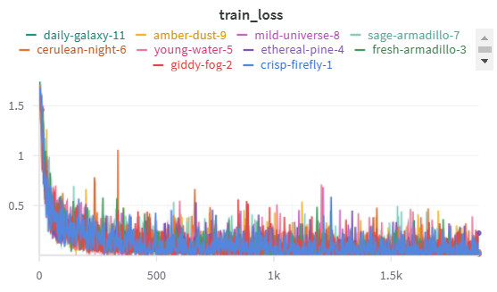

Operations
This is the report template for the exam. Please only remove the text formatted as with three dashes in front and behind like:
--- question 1 fill here ---
Where you instead should add your answers. Any other changes may have unwanted consequences when your report is
auto-generated at the end of the course. For questions where you are asked to include images, start by adding the image
to the figures subfolder (please only use .png, .jpg or .jpeg) and then add the following code in your answer:
markdown

In addition to this markdown file, we also provide the report.py script that provides two utility functions:
Running:
bash
python report.py html
Will generate a .html page of your report. After the deadline for answering this template, we will auto-scrape
everything in this reports folder and then use this utility to generate a .html page that will be your serve
as your final hand-in.
Running
bash
python report.py check
Will check your answers in this template against the constraints listed for each question e.g. is your answer too short, too long, or have you included an image when asked. For both functions to work you mustn't rename anything. The script has two dependencies that can be installed with
bash
pip install typer markdown
The checklist is exhaustive which means that it includes everything that you could do on the project included in the curriculum in this course. Therefore, we do not expect at all that you have checked all boxes at the end of the project. The parenthesis at the end indicates what module the bullet point is related to. Please be honest in your answers, we will check the repositories and the code to verify your answers.
data.py file such that it downloads whatever data you need and preprocesses it (if necessary) (M6)model.py and a training procedure to train.py and get that running (M6)requirements.txt and requirements_dev.txt file with whatever dependencies that you
are using (M2+M6)pep8) while doing the project (M7)Enter the group number you signed up on
Answer:
Group 27
Enter the study number for each member in the group
Example:
s232165, sXXXXXX, sXXXXXX
Answer:
s233791, s210169, s232165, s232515, s246714
A requirement to the project is that you include a third-party package not covered in the course. What framework did you choose to work with and did it help you complete the project?
Recommended answer length: 100-200 words.
Example: We used the third-party framework ... in our project. We used functionality ... and functionality ... from the package to do ... and ... in our project.
Answer:
For this project we used the third-party framework torchvision, and specificily the transform sub-library. We used the package functionality of being able to create a transform pipeline to modify images. We used this transform pipeline to easily resize and normalize our pictures in our data pipeline. Our images were originally 250 x 250 pixels, which is quite large given the task is to classify rice images. Hence, to save computation it was beneficial for us to make them smaller (50 x 50 pixels) and normalize all the individual pixel values. This package made it much easier for us to make these steps, as the package both comes with a pipeline setup to set these steps after each other and with build-in functions to do this. Moreover, the transform pipeline acts on the whole data set and there was therefore no need for us to loop over all the individual pictures, that was all handled by the package.
In the following section we are interested in learning more about you local development environment. This includes how you managed dependencies, the structure of your code and how you managed code quality.
Explain how you managed dependencies in your project? Explain the process a new team member would have to go through to get an exact copy of your environment.
Recommended answer length: 100-200 words
Example: We used ... for managing our dependencies. The list of dependencies was auto-generated using ... . To get a complete copy of our development environment, one would have to run the following commands
Answer:
To manage dependencies in our project we made use of the package manager Conda. The list of dependencies for our project was autogenerated into a requirements.txt file using the package pipreqs. To get a complete copy of our development environment, one would first have to combine the requirements files by running: cat requirements.txt requirements_dev.txt > combined-requirements.txt in the terminal. Then create a new conda environment by running: conda create --name <env_name> python=3.11 --file combined-requirements.txt in the terminal. This will create an environment running Python 3.11 and with all the packages in the comined-requirements.txt installed. Finally, one must activate the environment with the installed dependencies by running: conda activate <env_name> in the terminal. The new team member should now we all ready to run the project.
We expect that you initialized your project using the cookiecutter template. Explain the overall structure of your code. What did you fill out? Did you deviate from the template in some way?
Recommended answer length: 100-200 words
Example: From the cookiecutter template we have filled out the ... , ... and ... folder. We have removed the ... folder because we did not use any ... in our project. We have added an ... folder that contains ... for running our experiments.
Answer:
From the cookiecutter template we have filled out configs folder, the data folder, the dockerfiles folder, the models folder (which we only used in the start), the reports folder, the src folder, the tests folder. We deleted the notebooks folder since we did not use any jupyter notebooks in our project. We added a .dvc folder that contains the config file for dvc, a wandb folder that contains files related to our runs saved on weights and biases. In addition we have a number of .yaml files and ignore files that are used to implement continous integreation of our training setup and our api.
Overall, all the code that relates to the model, training the model, evaluating the model, the api for inference and the api for data drifting is stored in src. All our tests are stored in the tests folder and contains tests for the model, the data pipeline and the inference api. The configs folder stores our hyperparameters and additional files can be used to create more experiments if needed. In that way we ensure that each experiment is reproducable, so we always know what hyperparameters we have used.
Did you implement any rules for code quality and format? What about typing and documentation? Additionally, explain with your own words why these concepts matters in larger projects.
Recommended answer length: 100-200 words.
Example: We used ... for linting and ... for formatting. We also used ... for typing and ... for documentation. These concepts are important in larger projects because ... . For example, typing ...
Answer: We used
rufffor linting andrufffor formatting our code. We also usedmypyfor typing and used key words such asParameters,ArgsandReturnwhen writting dogstring documentation for our functions. Overall, in the project we strived to document all our functions in the src folder both with dogstrings and a suitable amount of comments. We added two styling rules inruff, one to manage the order of the imports and the other to ensure that no line extends a 120 characters.
These concepts are important in larger projects, so make sure that the code is easy to understand for other programmers. In large projects many people work on projects, and by following the same formatting standard the code becomes easier to read for people who knows this style standard. Furthermore, by using typing it is easier to follow the code, and documentation again serve as a tool to make it easier to understand what the code does. All these steps, serve to make code more understandable and easy to work on if it is the first time you see it.
In the following section we are interested in how version control was used in your project during development to corporate and increase the quality of your code.
How many tests did you implement and what are they testing in your code?
Recommended answer length: 50-100 words.
Example: In total we have implemented X tests. Primarily we are testing ... and ... as these the most critical parts of our application but also ... .
Answer:
--- question 7 fill here ---
What is the total code coverage (in percentage) of your code? If your code had a code coverage of 100% (or close to), would you still trust it to be error free? Explain you reasoning.
Recommended answer length: 100-200 words.
Example: The total code coverage of code is X%, which includes all our source code. We are far from 100% coverage of our ** code and even if we were then...*
Answer:
--- question 8 fill here ---
Did you workflow include using branches and pull requests? If yes, explain how. If not, explain how branches and pull request can help improve version control.
Recommended answer length: 100-200 words.
Example: We made use of both branches and PRs in our project. In our group, each member had an branch that they worked on in addition to the main branch. To merge code we ...
Answer:
During our project each team member had different levels of experience working with git. Therefore, some people managed to work in their own branch in addition to the main branch, and merge code through pull requests while others spend the time becoming more familiar with git and ended up merging the code by pushing directly to the main branch. Ideally we would all have sat down and the more familiar members could show the rest of the group how to make branches and pull requests, but the group worked mostly online and with different time schedules and time zones. That being said, in future projects it would be ideal for everyone to create either their own branch in addition to the main or for everyone to create a new branch everytime a new feature is developed.
Did you use DVC for managing data in your project? If yes, then how did it improve your project to have version control of your data. If no, explain a case where it would be beneficial to have version control of your data.
Recommended answer length: 100-200 words.
Example: We did make use of DVC in the following way: ... . In the end it helped us in ... for controlling ... part of our pipeline
Answer: In this project we did make use of DVC for managing our data version. In this was we are able to track what version of the data we are working with and more importantly revert to a previous of the data to recreate our experiments if for example unexpteced behavior of a model is seen after training on a new data set. Using DVC also makes it easy for a new team member to access the data, that can be pulled through the simple command
dvc pull. However, in our code we ended up not pulling the data through DVC, but pulled the data directly from our associated google cloud bucket. In this project we only worked with the data set we started with, but DVC makes it easy to add additional data, while ensuring data version control.
Discuss you continuous integration setup. What kind of continuous integration are you running (unittesting, linting, etc.)? Do you test multiple operating systems, Python version etc. Do you make use of caching? Feel free to insert a link to one of your GitHub actions workflow.
Recommended answer length: 200-300 words.
Example: We have organized our continuous integration into 3 separate files: one for doing ..., one for running ... testing and one for running ... . In particular for our ..., we used ... .An example of a triggered workflow can be seen here:
Answer:
We have organized our continuous integration into three workflows, each focusing on a specific aspect of development. The code check workflow ensures repository-wide code quality by using Ruff for linting and auto-formatting. It identifies issues such as unnecessary or duplicate imports and unused variables. This workflow runs automatically on every push or pull request to the main or master branches. To make the process faster, we use caching to manage Python dependencies efficiently.
The pre-commit workflow focuses on validating only modified or staged files during a push or pull request. It runs hooks that include linting, formatting, and YAML/JSON validation to ensure that new changes meet coding standards.
The testing workflow automates unit tests, integration tests, and API endpoint validations. This workflow is set up to run on Ubuntu, Windows, and macOS, testing across Python versions 3.10, 3.11, and 3.12. It covers tasks such as validating API endpoints, preparing datasets, and testing model training. We also use caching for dependencies to optimize the runtime of these tests.
Together, these workflows provide a robust CI setup that maintains high code quality, ensures efficient development, and supports cross-platform compatibility.
In the following section we are interested in learning more about the experimental setup for running your code and especially the reproducibility of your experiments.
How did you configure experiments? Did you make use of config files? Explain with coding examples of how you would run a experiment.
Recommended answer length: 50-100 words.
Example: We used a simple argparser, that worked in the following way: Python my_script.py --lr 1e-3 --batch_size 25
Answer:
In our project we configured experiments through the use of the Hydra library and config files that contains variables such as the learning rate, batch size and the optimizer configurations for training our model. In our project we made config files for both the data.py file, the train.py file and the evaluate.py file. In each of these files the main function takes an argument that we called config_name that holds a path to the config file with the experiment details. To run an experiment, simply adjust the path to the associated config file.
Reproducibility of experiments are important. Related to the last question, how did you secure that no information is lost when running experiments and that your experiments are reproducible?
Recommended answer length: 100-200 words.
Example: We made use of config files. Whenever an experiment is run the following happens: ... . To reproduce an experiment one would have to do ...
Answer:
To ensure that our experiements are reproducible and can be tracked we did two key things. First of all we made use of config files, so when an experiment is run key variables are pulled from this config file, and we are able to store these variables. If we wished to make another experiment we would just add another config file and save the old one so we know how we arrived at the results we achieved. To reproduce the experiment one would simply have to run the code again with the same config file. In addition to making use of config files we also tracked the model performance during training, and saved the model itself using Weights and Biases. In that way we can always keep track of what parameters we have used during training and the resulting model and thereby be able to train a model in a similar way or do inference with the model resulting from a specific experiment.
Upload 1 to 3 screenshots that show the experiments that you have done in W&B (or another experiment tracking service of your choice). This may include loss graphs, logged images, hyperparameter sweeps etc. You can take inspiration from this figure. Explain what metrics you are tracking and why they are important.
Recommended answer length: 200-300 words + 1 to 3 screenshots.
Example: As seen in the first image when have tracked ... and ... which both inform us about ... in our experiments. As seen in the second image we are also tracking ... and ...
Answer:
As seen in the first image we have tracked the training loss development when training during each experiment, which informs us both if the model is learning and to what extent the model is converging.

Docker is an important tool for creating containerized applications. Explain how you used docker in your experiments/project? Include how you would run your docker images and include a link to one of your docker files.
Recommended answer length: 100-200 words.
Example: For our project we developed several images: one for training, inference and deployment. For example to run the training docker image:
docker run trainer:latest lr=1e-3 batch_size=64. Link to docker file:Answer:
--- question 15 fill here ---
When running into bugs while trying to run your experiments, how did you perform debugging? Additionally, did you try to profile your code or do you think it is already perfect?
Recommended answer length: 100-200 words.
Example: Debugging method was dependent on group member. Some just used ... and others used ... . We did a single profiling run of our main code at some point that showed ...
Answer:
--- question 16 fill here ---
In the following section we would like to know more about your experience when developing in the cloud.
List all the GCP services that you made use of in your project and shortly explain what each service does?
Recommended answer length: 50-200 words.
Example: We used the following two services: Engine and Bucket. Engine is used for... and Bucket is used for...
Answer:
--- question 17 fill here ---
The backbone of GCP is the Compute engine. Explained how you made use of this service and what type of VMs you used?
Recommended answer length: 100-200 words.
Example: We used the compute engine to run our ... . We used instances with the following hardware: ... and we started the using a custom container: ...
Answer:
--- question 18 fill here ---
Insert 1-2 images of your GCP bucket, such that we can see what data you have stored in it. You can take inspiration from this figure.
Answer:
--- question 19 fill here ---
Upload 1-2 images of your GCP artifact registry, such that we can see the different docker images that you have stored. You can take inspiration from this figure.
Answer:
--- question 20 fill here ---
Upload 1-2 images of your GCP cloud build history, so we can see the history of the images that have been build in your project. You can take inspiration from this figure.
Answer:
--- question 21 fill here ---
Did you manage to train your model in the cloud using either the Engine or Vertex AI? If yes, explain how you did it. If not, describe why.
Recommended answer length: 100-200 words.
Example: We managed to train our model in the cloud using the Engine. We did this by ... . The reason we choose the Engine was because ...
Answer:
--- question 22 fill here ---
Did you manage to write an API for your model? If yes, explain how you did it and if you did anything special. If not, explain how you would do it.
Recommended answer length: 100-200 words.
Example: We did manage to write an API for our model. We used FastAPI to do this. We did this by ... . We also added ... to the API to make it more ...
Answer:
--- question 23 fill here ---
Did you manage to deploy your API, either in locally or cloud? If not, describe why. If yes, describe how and preferably how you invoke your deployed service?
Recommended answer length: 100-200 words.
Example: For deployment we wrapped our model into application using ... . We first tried locally serving the model, which worked. Afterwards we deployed it in the cloud, using ... . To invoke the service an user would call
curl -X POST -F "file=@file.json"<weburl>Answer:
--- question 24 fill here ---
Did you perform any unit testing and load testing of your API? If yes, explain how you did it and what results for the load testing did you get. If not, explain how you would do it.
Recommended answer length: 100-200 words.
Example: For unit testing we used ... and for load testing we used ... . The results of the load testing showed that ... before the service crashed.
Answer:
--- question 25 fill here ---
Did you manage to implement monitoring of your deployed model? If yes, explain how it works. If not, explain how monitoring would help the longevity of your application.
Recommended answer length: 100-200 words.
Example: We did not manage to implement monitoring. We would like to have monitoring implemented such that over time we could measure ... and ... that would inform us about this ... behaviour of our application.
Answer:
--- question 26 fill here ---
In the following section we would like you to think about the general structure of your project.
How many credits did you end up using during the project and what service was most expensive? In general what do you think about working in the cloud?
Recommended answer length: 100-200 words.
Example: Group member 1 used ..., Group member 2 used ..., in total ... credits was spend during development. The service costing the most was ... due to ... . Working in the cloud was ...
Answer:
--- question 27 fill here ---
Did you implement anything extra in your project that is not covered by other questions? Maybe you implemented a frontend for your API, use extra version control features, a drift detection service, a kubernetes cluster etc. If yes, explain what you did and why.
Recommended answer length: 0-200 words.
Example: We implemented a frontend for our API. We did this because we wanted to show the user ... . The frontend was implemented using ...
Answer:
--- question 28 fill here ---
Include a figure that describes the overall architecture of your system and what services that you make use of. You can take inspiration from this figure. Additionally, in your own words, explain the overall steps in figure.
Recommended answer length: 200-400 words
Example:
The starting point of the diagram is our local setup, where we integrated ... and ... and ... into our code. Whenever we commit code and push to GitHub, it auto triggers ... and ... . From there the diagram shows ...
Answer:
--- question 29 fill here ---
Discuss the overall struggles of the project. Where did you spend most time and what did you do to overcome these challenges?
Recommended answer length: 200-400 words.
Example: The biggest challenges in the project was using ... tool to do ... . The reason for this was ...
Answer:
--- question 30 fill here ---
State the individual contributions of each team member. This is required information from DTU, because we need to make sure all members contributed actively to the project
Recommended answer length: 50-200 words.
Example: Student sXXXXXX was in charge of developing of setting up the initial cookie cutter project and developing of the docker containers for training our applications. Student sXXXXXX was in charge of training our models in the cloud and deploying them afterwards. All members contributed to code by...
Answer:
--- question 31 fill here ---